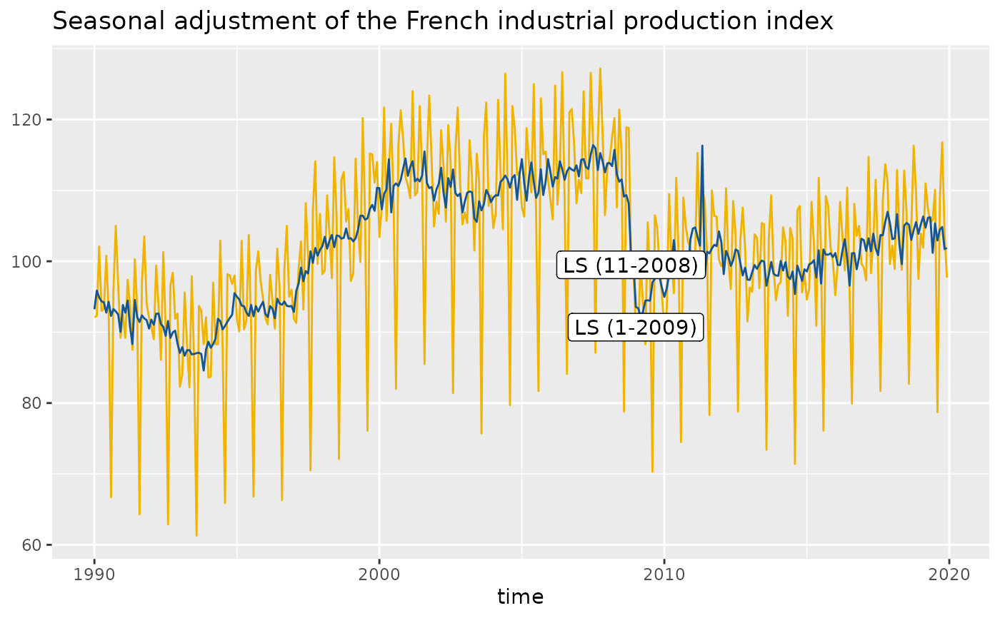
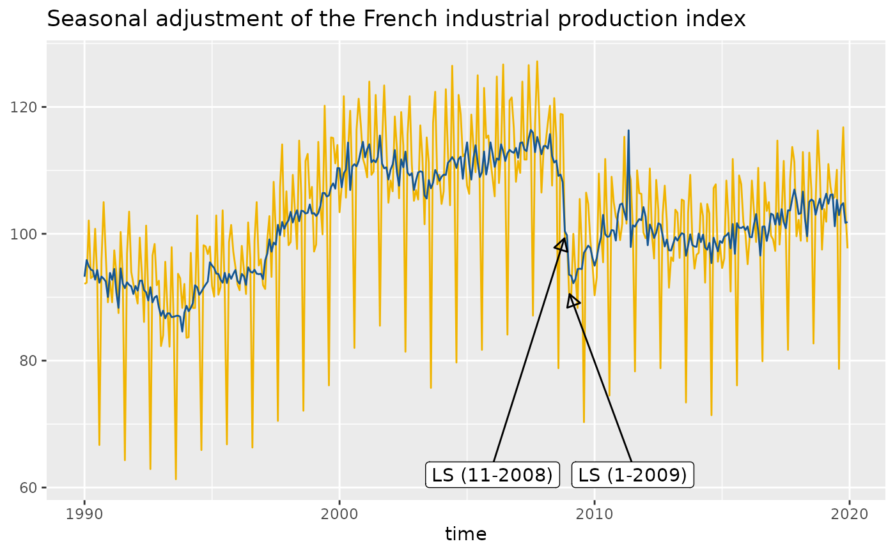

Function to add directly to the plot the outliers used in the pre-adjustment process of the seasonal adjustment.
Usage
geom_outlier(
mapping = NULL,
data = NULL,
stat = "outlier",
geom = c("text", "label", "text_repel", "label_repel"),
position = "identity",
...,
method = c("x13", "tramoseats"),
spec = NULL,
frequency = NULL,
message = TRUE,
first_date = NULL,
last_date = NULL,
coefficients = FALSE,
digits = 1,
show.legend = NA,
inherit.aes = TRUE
)Arguments
- mapping
Set of aesthetic mappings created by aes(). If specified and
inherit.aes = TRUE(the default), it is combined with the default mapping at the top level of the plot. You must supplymappingif there is no plot mapping.- data
A
data.framethat contains the data used for the seasonal adjustment.- stat
The statistical transformation to use on the data for this layer, as a string.
- geom
character. The geometric to use to display the data:
GeomText(geom = "text", the default, see geom_text());GeomLabel(geom = "label", see geom_label());GeomTextRepel(geom = "text_repel", the default, see geom_text_repel());GeomLabelRepel(geom = "label_repel", the default, see geom_label_repel()).- position
Position adjustment, either as a string, or the result of a call to a position adjustment function.
- ...
Other arguments passed on to layer(). They may be parameters of geom_text() (if
geom = "text"), geom_label() (ifgeom = "label"), geom_text_repel() (ifgeom = "text_repel") or geom_label_repel() (ifgeom = "label_repel").- method
the method used for the seasonal adjustment.
"x13"(by default) for the X-13ARIMA method and"tramoseats"for TRAMO-SEATS.- spec
the specification used for the seasonal adjustment. See x13() or tramoseats().
- frequency
the frequency of the time series. By default (
frequency = NULL), the frequency is computed automatically.- message
a
booleanindicating if a message is printed with the frequency used.- first_date
A numeric specifying the first date from which the outliers are plotted. By default (
first_date = NULL) the outliers are plotted from the beginning of the time series.- last_date
A numeric specifying the first date from which the outliers are plotted. By default (
first_date = NULL) the outliers are plotted until the end of the time series.- coefficients
boolean indicating if the estimates coefficients are printed. By default
coefficients = FALSE.- digits
integer indicating the number of decimal places to be used for numeric diagnostics. By default
digits = 1.- show.legend
logical. Should this layer be included in the legends?
NA, the default, includes if any aesthetics are mapped.FALSEnever includes, andTRUEalways includes. It can also be a named logical vector to finely select the aesthetics to display.- inherit.aes
If
FALSE, overrides the default aesthetics, rather than combining with them.
Details
With the parameter geom = "text", the outliers used in the pre-adjustment process of the seasonal adjustment are directly added to the plot. With geom = "label" a rectangle is drawn behind the names of the outliers, making them easier to read. The same with geom = "text_repel" or geom = "label_repel" but text labels are also repeled away from each other and away from the data points (see geom_label_repel()).
Examples
p_sa_ipi_fr <- ggplot(data = ipi_c_eu_df, mapping = aes(x = date, y = FR)) +
geom_line(color = "#F0B400") +
labs(title = "Seasonal adjustment of the French industrial production index",
x = "time", y = NULL) +
geom_sa(color = "#155692", message = FALSE)
# To add the outliers:
p_sa_ipi_fr + geom_outlier(geom = "label",
message = FALSE)

# To have a more readable plot with outliers names that repeled away from each other
# and from the data points:
p_sa_ipi_fr +
geom_outlier(geom = "label_repel",
message = FALSE,
ylim = c(NA, 65),
arrow = arrow(length = unit(0.03, "npc"),
type = "closed", ends = "last"))

# To only plot the outliers from a specific date (2009):
p_sa_ipi_fr +
geom_outlier(geom = "label_repel",
message = FALSE,
first_date = 2009,
ylim = c(NA, 65),
arrow = arrow(length = unit(0.03, "npc"),
type = "closed", ends = "last"))